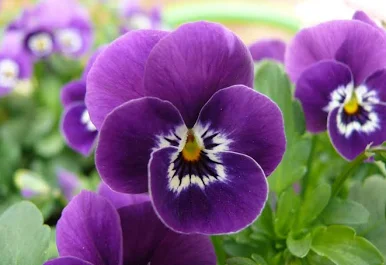
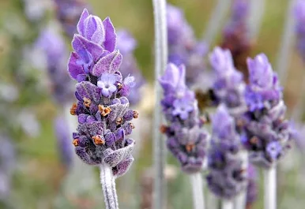
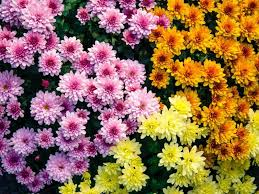
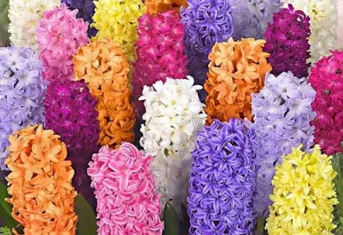
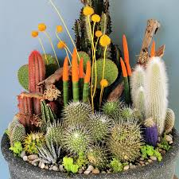
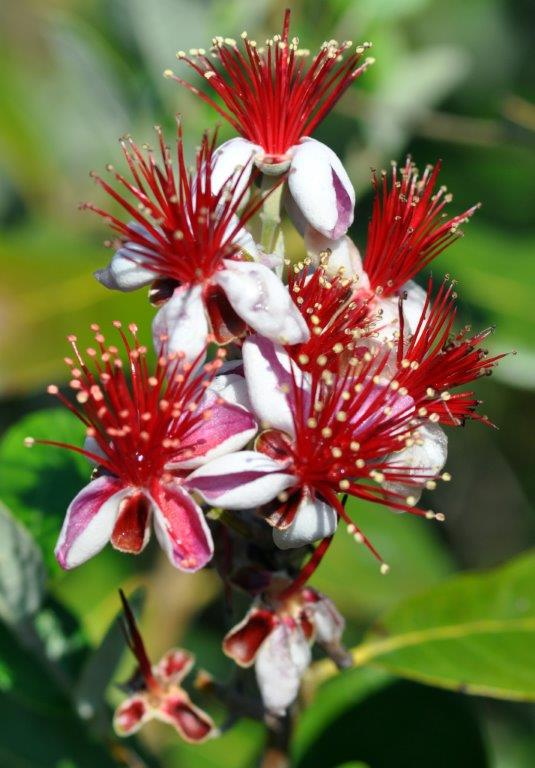

Çiçek Türleri
Çiçekler yetiştikleri ortama ve kullanım amaçlarına göre farklı gruplara ayrılır.
🌸 Bahçe Çiçekleri
Gül
Bahçelerde en sık yetiştirilen çiçektir.

Lale
Zarif görünümüyle bilinir.

Menekşe
Renkli yapraklarıyla dikkat çeker.
Siyah Gül
Nadir bulunan ve gizemli bir çiçektir.
🌿 Kır Çiçekleri
Papatya
Doğal ve sade bir görünüme sahiptir.

Lavanta
Hoş kokusu ve mor rengiyle bilinir.
Zambak
Güzel kokusu ve büyük çiçekleriyle tanınır.

Kasımpatı
Sonbaharda açan dayanıklı bir çiçektir.
🌼 Süs Çiçekleri
Ayçiçeği
Güneşe yönelen yapısıyla dikkat çeker.

Sümbül
Renkli ve hoş kokulu çiçekler açar.

Kaktüs
Az su ile yaşayabilen dayanıklı bir bitkidir.

Bademli Çiçek
Erken ilkbaharda açan narin bir çiçektir.